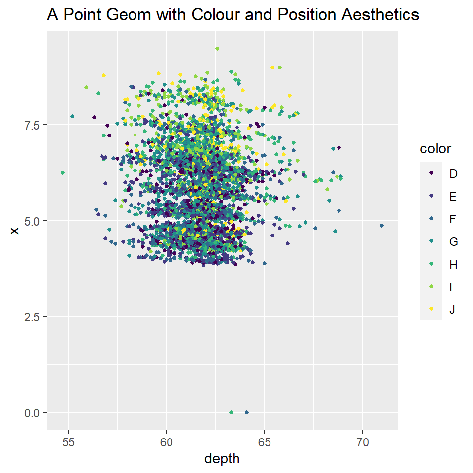
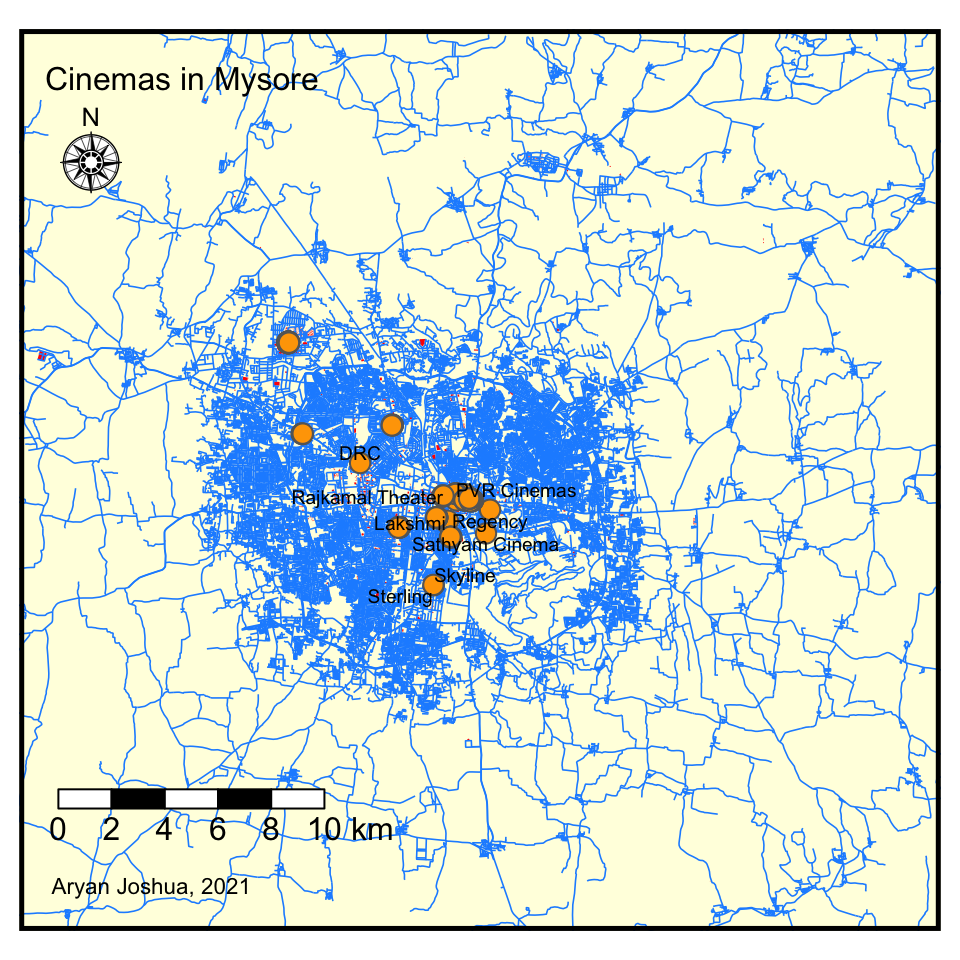

Hi, I’m Aryan and here I have a few graphs on different topics that show my progress in being able to visualize data through various methods that I’ve learnt in this workshop.
I have chosen the diamond data set which contains the prices and other attributes of almost 54000 diamonds. The variety of attributes are the price of the diamond in US dollars, the carat of the diamond, the quality of the diamond (cut of the diamond), the colour and clarity and various dimensions of the diamonds.
## Rows: 53,940
## Columns: 10
## $ carat <dbl> 0.23, 0.21, 0.23, 0.29, 0.31, 0.24, 0.24, 0.26, 0.22, 0.23, 0.…
## $ cut <ord> Ideal, Premium, Good, Premium, Good, Very Good, Very Good, Ver…
## $ color <ord> E, E, E, I, J, J, I, H, E, H, J, J, F, J, E, E, I, J, J, J, I,…
## $ clarity <ord> SI2, SI1, VS1, VS2, SI2, VVS2, VVS1, SI1, VS2, VS1, SI1, VS1, …
## $ depth <dbl> 61.5, 59.8, 56.9, 62.4, 63.3, 62.8, 62.3, 61.9, 65.1, 59.4, 64…
## $ table <dbl> 55, 61, 65, 58, 58, 57, 57, 55, 61, 61, 55, 56, 61, 54, 62, 58…
## $ price <int> 326, 326, 327, 334, 335, 336, 336, 337, 337, 338, 339, 340, 34…
## $ x <dbl> 3.95, 3.89, 4.05, 4.20, 4.34, 3.94, 3.95, 4.07, 3.87, 4.00, 4.…
## $ y <dbl> 3.98, 3.84, 4.07, 4.23, 4.35, 3.96, 3.98, 4.11, 3.78, 4.05, 4.…
## $ z <dbl> 2.43, 2.31, 2.31, 2.63, 2.75, 2.48, 2.47, 2.53, 2.49, 2.39, 2.…## carat cut color clarity depth
## Min. :0.2000 Fair : 1610 D: 6775 SI1 :13065 Min. :43.00
## 1st Qu.:0.4000 Good : 4906 E: 9797 VS2 :12258 1st Qu.:61.00
## Median :0.7000 Very Good:12082 F: 9542 SI2 : 9194 Median :61.80
## Mean :0.7979 Premium :13791 G:11292 VS1 : 8171 Mean :61.75
## 3rd Qu.:1.0400 Ideal :21551 H: 8304 VVS2 : 5066 3rd Qu.:62.50
## Max. :5.0100 I: 5422 VVS1 : 3655 Max. :79.00
## J: 2808 (Other): 2531
## table price x y
## Min. :43.00 Min. : 326 Min. : 0.000 Min. : 0.000
## 1st Qu.:56.00 1st Qu.: 950 1st Qu.: 4.710 1st Qu.: 4.720
## Median :57.00 Median : 2401 Median : 5.700 Median : 5.710
## Mean :57.46 Mean : 3933 Mean : 5.731 Mean : 5.735
## 3rd Qu.:59.00 3rd Qu.: 5324 3rd Qu.: 6.540 3rd Qu.: 6.540
## Max. :95.00 Max. :18823 Max. :10.740 Max. :58.900
##
## z
## Min. : 0.000
## 1st Qu.: 2.910
## Median : 3.530
## Mean : 3.539
## 3rd Qu.: 4.040
## Max. :31.800
## Here I am trying to find a correlation between the depth and the x dimensions of a diamond. The depth of the diamond is total depth percentage = z / mean(x, y) = 2 * z / (x + y) (43–79)

In this graph you can see that a lot of the diamonds are the same size even though they’re different colours and have different depths. I have used a slice command to make the data set smaller as with the large amount of data, the graph would look very cluttered. I have plotted the depth on the x axis and the x dimensions of the diamond on the y axis with the color aesthetic being used to show the different colours of diamonds that exist.
For this graph I have chosen to map out the cinemas located around Mysore. I have used data from OSM to locate the cinemas in Mysore.
## num [1:2, 1:2] 76.5 12.1 76.8 12.5
## - attr(*, "dimnames")=List of 2
## ..$ : chr [1:2] "x" "y"
## ..$ : chr [1:2] "min" "max"## num [1:2, 1:2] 76.5 12.1 76.8 12.5
## - attr(*, "dimnames")=List of 2
## ..$ : chr [1:2] "x" "y"
## ..$ : chr [1:2] "min" "max"After running the glimpse and str command, we can note the longitude and latitude of Mysore. It shows us the minimum and maximum longitude and latitude for the city. The minimum longitude is 76.49536 and maximum longitude is 76.81536 while the minimum latitude is 12.14518 and maximum latitude is 12.46518.
Using Open Street Maps, I have extracted data regarding the buildings, highways and cinemas located in Mysore.
## min max
## x 76.49536 76.81536
## y 12.14518 12.46518## [1] 22104## [1] 127Using ggplot, I have created a map that includes the buildings, roads and mainly the cinemas that are located all around Mysore indicated by the yellow dots.

I have decided to use The Simpsons as the show I will be using for the networks created below. I have taken a list of characters and their connections with each other from Season 03 Episode 05. In the data set, the nodes contain the columns of their name, sex, occupation and hair colour. In the edges dataset, it contains the to and from, the weight and the amount of dialogues exchanged between the two characters in that particular episode.
## # A tibble: 29 × 5
## id names sex occupation `hair color`
## <dbl> <chr> <chr> <chr> <chr>
## 1 1 Homer Simpson M Safety Inspector None
## 2 2 Marge Simpson F Homemaker Blue
## 3 3 Maggie Simpson F Baby Blonde
## 4 4 Bart Simpson M Student Blonde
## 5 5 Lisa Simpson F Student Blonde
## 6 6 Milhouse Van Houten M Student Blue
## 7 7 Sherri Mackleberry F Student Purple
## 8 8 Terri Mackleberry F Student Purple
## 9 9 Martin Prince M Student Blonde
## 10 10 Otto Mann M Bus Driver Black
## # … with 19 more rows## # A tibble: 44 × 5
## from to weight relationship `dialogues exchanged`
## <dbl> <dbl> <dbl> <chr> <dbl>
## 1 1 5 8 family 5
## 2 4 6 9 friends 10
## 3 4 5 6 family 3
## 4 7 4 2 friends 1
## 5 8 4 2 friends 1
## 6 7 6 3 friends 1
## 7 8 6 3 friends 1
## 8 9 6 3 friends 1
## 9 10 6 1 acquaintance 1
## 10 10 7 1 acquaintance 1
## # … with 34 more rows## # A tbl_graph: 29 nodes and 44 edges
## #
## # An undirected simple graph with 1 component
## #
## # Node Data: 29 × 5 (active)
## id names sex occupation `hair color`
## <dbl> <chr> <chr> <chr> <chr>
## 1 1 Homer Simpson M Safety Inspector None
## 2 2 Marge Simpson F Homemaker Blue
## 3 3 Maggie Simpson F Baby Blonde
## 4 4 Bart Simpson M Student Blonde
## 5 5 Lisa Simpson F Student Blonde
## 6 6 Milhouse Van Houten M Student Blue
## # … with 23 more rows
## #
## # Edge Data: 44 × 5
## from to weight relationship `dialogues exchanged`
## <int> <int> <dbl> <chr> <dbl>
## 1 1 5 8 family 5
## 2 4 6 9 friends 10
## 3 4 5 6 family 3
## # … with 41 more rows## # A tibble: 29 × 5
## id names sex occupation `hair color`
## <dbl> <chr> <chr> <chr> <chr>
## 1 1 Homer Simpson M Safety Inspector None
## 2 2 Marge Simpson F Homemaker Blue
## 3 3 Maggie Simpson F Baby Blonde
## 4 4 Bart Simpson M Student Blonde
## 5 5 Lisa Simpson F Student Blonde
## 6 6 Milhouse Van Houten M Student Blue
## 7 7 Sherri Mackleberry F Student Purple
## 8 8 Terri Mackleberry F Student Purple
## 9 9 Martin Prince M Student Blonde
## 10 10 Otto Mann M Bus Driver Black
## # … with 19 more rows## # A tibble: 44 × 5
## from to weight relationship `dialogues exchanged`
## <dbl> <dbl> <dbl> <chr> <dbl>
## 1 1 5 8 family 5
## 2 4 6 9 friends 10
## 3 4 5 6 family 3
## 4 7 4 2 friends 1
## 5 8 4 2 friends 1
## 6 7 6 3 friends 1
## 7 8 6 3 friends 1
## 8 9 6 3 friends 1
## 9 10 6 1 acquaintance 1
## 10 10 7 1 acquaintance 1
## # … with 34 more rows## # A tibble: 29 × 5
## id label sex occupation group
## <dbl> <chr> <chr> <chr> <chr>
## 1 1 Homer Simpson M Safety Inspector None
## 2 2 Marge Simpson F Homemaker Blue
## 3 3 Maggie Simpson F Baby Blonde
## 4 4 Bart Simpson M Student Blonde
## 5 5 Lisa Simpson F Student Blonde
## 6 6 Milhouse Van Houten M Student Blue
## 7 7 Sherri Mackleberry F Student Purple
## 8 8 Terri Mackleberry F Student Purple
## 9 9 Martin Prince M Student Blonde
## 10 10 Otto Mann M Bus Driver Black
## # … with 19 more rows## # A tibble: 44 × 5
## from to weight relationship `dialogues exchanged`
## <dbl> <dbl> <dbl> <chr> <dbl>
## 1 1 5 8 family 5
## 2 4 6 9 friends 10
## 3 4 5 6 family 3
## 4 7 4 2 friends 1
## 5 8 4 2 friends 1
## 6 7 6 3 friends 1
## 7 8 6 3 friends 1
## 8 9 6 3 friends 1
## 9 10 6 1 acquaintance 1
## 10 10 7 1 acquaintance 1
## # … with 34 more rowsI have plotted an interactive map that shows all the characters and how they’re connected to each other in the particular Simpsons episode that I’ve chosen and also shows us the colour of their hair.
This workshop was quite a different experience for me. I haven’t done a lot of coding before this and trying to learn the syntax and various methods through which we could create these graphs was a bit taxing but with help from Arvind I was able to understand quite a bit of the information. The course was mainly about us being able to visualize data using R Studio. I found the theory of visualizing data intriguing and didn’t know that there was a lot of thought also going into how and what data can be visualized. The pronouns opened an entirely new world for me in the way that I look at data now. I learnt the back-end process of making graphs through R Studio and also to think about what goes on the graphs and the design of the tables and graphs. I also learnt how to create my own data set which I am super proud of. This workshop also taught me how to analyse data and critique a graph to get the most information out of a graph. I was also really happy with the way Arvind taught us and was also super patient with us and didn’t mind us asking him to explain the same code over and over again. I enjoyed this workshop quite a lot and I might go onto explore generative art through R Studio.
Thank You.